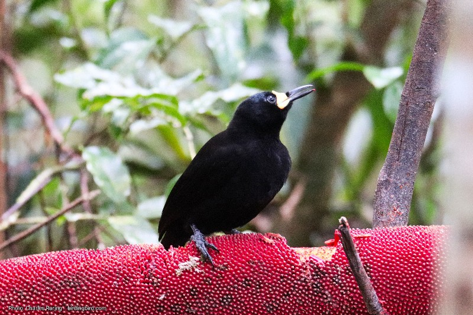
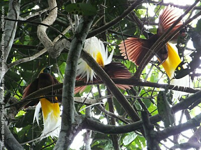
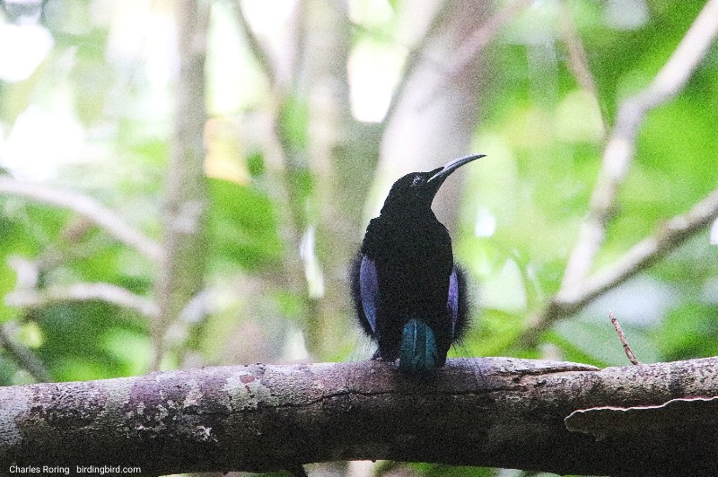
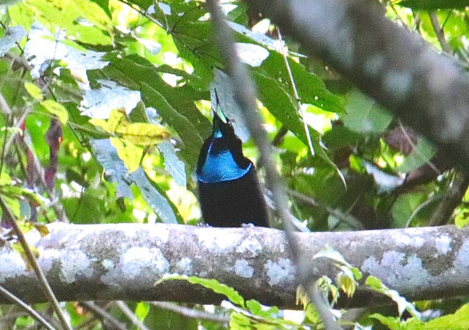

If you want a guide to arrange your birding tour and guide you during the trip, please, contact me (Charles Roring by email to: peace4wp@gmail.com or by whatsapp to: +6281332245180.
Paradise Bird is the name of a group of birds from the family of Paradisaeidae. Most of them have got beautiful feather with unique mating behaviors. According to Wikipedia, there are 42 species of birds of paradise that are known to science. Most of them live in tropical rainforest of New Guinea and its satellite islands. The New Guinea island itself consists of 2 territories. The eastern one is Papua New Guinea; and the western one is West Papua which is under the administration of Indonesia.
As a bird watching tour guide, I personally have seen some of them including:
Long-tailed Paradigala (Paradigala carunculata) lives in a very limited areas of higher montane forest of Arfak mountains and possibly the Tambrauw Mountains. I saw it once eating red fruit in Mount Soyti of Arfak range. The fruit was placed by local villager to attract Western Parotia and other birds in the forest. Fortunately, the Long-tailed Paradigala also came to have some bites and then flew away. In such a fleeting moment, I managed to make a few shots of this rare bird.
Long-tailed Paradigala di Arfak mountains
Western Parotia (Parotia sefilata) is a species of birds of paradise that has got a unique mating behaviour. To attract a female mating partner, a male Western Parotia has to perform a courtship dance on the ground. First, he has to clear forest floor from fallen leaves and twigs. After that he will call his female partner. While waiting for them to come, he will practice dancing by bowing down to salute his audience, by jumping back and forth, expanding his feather to look like a ballerina and by moving his head to the right and the left. Because of this unique behavior, he is often called a ballerina bird. A Male Western Parotia was performing a Courtship Dance
Western Parotia lives in higher montane forest of Arfak mountains. He does not have colorful feather like Wilson's Bird of Paradise or Lesser Birds of Paradise but an adult male Western Parotia, with 6 antennas on his head, has always been on the top list target birds to watch by serious bird watchers. Western Parotia eats besuwei and red pandanus fruits.
Lesser Birds of Paradise (Paradisaea minor) - This paradise birds live in lowland and lower montane forest. I used to see the birds in Susnguakti, Senopi, Ayapokiar, Syugrar, Syuan, and Malagufuk. These are names of forest areas in West Papua province. We watch the birds from 06.00 to 09.00 in the mornings and then from 15.00 to 17.00 in the afternoons. In a lek of Lesser Birds of Paradise, we can watch between 3 to 5 males competing one to another to mate with a few female Lesser BOP. The male birds perform courtship dance and show their beautiful feather. When the competition gets tougher, they may end up in fightings. During the fights, sometimes, we can see one of the birds falls to the ground. If he is ok, he will fly again.
Lesser Birds of Paradise
Magnificent Riflebird - The male is a solo player. Unlike the Lesser Birds of Paradise that dance in a group in a tall tree, a Magnificent Riflebird chooses a horizontal branch or vine where he can sits and calls his female partner. Some times he does his dance rehearsals and cleans his "stage" from new leaf buds that come out of the branch. The male bird has got black feather, glowing triangular iridescent blue shield on his chest, iridescent dark purple bluish wings, and dark turquoise tail (please, see pictures below).
Magnificent Riflebird in West PapuaMagnificent Riflebird in Susnguakti forest of Manokwari
The dance of a magnificent riflebird looks like the dance of a cheerleader in a basketball or football match. He performs his courtship dance by jumping and waving his wings that he open to look like fans. There are several places that are good for bird watchers to find this paradise bird. Some of them include Susnguakti forest of Manokwari, Klatomok Village in Sorong regency, and Ases Valley in Tambrauw mountains.